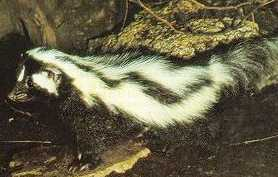
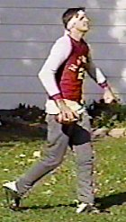
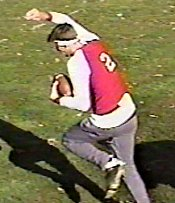

July 30th – Late in the summer of 2003, huge news broke in the Cork
Bowl offices when they received the following letter from Hall of Famer
Kirby Newell asking the league to reinstate him for this year's game:
As of today, the league has yet to reach a decision on Newell's
request. Although Commissioner Cork declined an interview request,
the league did release a statement that said, "The league would love
to welcome Kirby back, but there is a lot of red tape we would have to go
through to make it happen. The all-time quarterback request is not a
likely resolution, as it would jeopardize the legacy this game has worked
so hard to build over the years. However, the league would consider
allowing Newell to play quarterback for one team as long as they had a
defensive replacement. Having never played with substitutes for 12
years, the league would have to study the situation and come up with a
viable system to put in place that would not favor one team over the
other. Another concern is several of the players have expressed
hesitancy in having Kirby on the field knowing that one wrong move could
be disastrous. With all of these issues floating around, the league
is unable to make a decision at this time. We hope to have all of
the information gathered by the end of August so we can make a public
statement in early September."
NEWS
RELEASE
September 4th - Defending champion Hartebeests have new team name.
Sticking with the South African theme, they will be known as the Zo’ril.
CHARLESTON, Illinois
-- Team representative Dave Meggett announced this year's new team name in
an effort for a three-peat amidst many changes to the organization. The
team will be meeting in various forms to discuss goals and expectations.
As expected, there will be a giant void to fill by the loss of Jeff Henney
to NFL Europe. The team took a risky move by trading a mainstay of the
organization, Greg Howard, in order to free cap room. Team quarterback
Willy Truitt also mentioned, “I guess winning doesn’t make everyone
happy, so we sent Greg on his way. I hope he is happy now.” Truitt
also added, “Mr. Williamson is every bit of the player that Greg is.
A long-time knock on Josh was he couldn’t catch - well anybody that
watched last year's game knows it won’t be hard for him to out-produce
Howard on the offensive side of the ball.”

Another cap-friendly move
made by the Zo’ril was to lure Brooks Wilson out of retirement.
The Zo’ril were able to buy out the remaining years on his contract from
the Big Horned Sheep for an undisclosed amount. Zo’ril veteran
Reggie Truitt seemed to be the driving force in this decision. He stated,
“I don’t know what Brooks has left on the field, but I am looking
forward to some APBA Baseball on the plane rides.”
It is believed that the Wilson move was made in an attempt to make Reggie
happy because he is in the last year of his contract. The Zo’ril are
afraid to lose him to free-agency, and are apparently ready to do anything
to make him happy. Internet speculation has hinted towards retirement for
Reggie, but when asked about this at spring camp, Truitt emphatically
stated, “retire this” while making obscene gestures towards the press.
Meggett was also recently in touch with Ryan Tomlinson, who is happy to be
back with the team. Tomlinson commented, “To play with the Truitt
brothers every year is a blessing. All this winning – I am running out
of women to give my Cork Bowl rings to.”
Josh Williamson was unavailable for comment, but is believed to have a
press conference scheduled in the somewhat near future.
To read more about the
Zo'ril (a.k.a. South American skunk), please visit: http://www.americazoo.com/goto/index/mammals/279.htm.
Contacts:
Dave Meggett
Tuna Consulting Inc.
618-555-TUNA
www.tunaconsulting.com
Back to top
Newell Will Return to Quarterback the
"Grisons" in Cork Bowl 13
as First One-Way Player
September 9th - After a lengthy waiver-request process, the league has
reinstated Kirby Newell and he will quarterback the "Grisons" in
Cork B
owl 13 - with a new wrinkle. He will play quarterback on
offense, and will have a defensive replacement on defense.
"Wow. I'm so elated, there aren't words to describe the
moment," answered Newell at the press conference. Newell suffered a career-ending injury to his right leg prior to Cork Bowl 10 and
has had limited mobility ever since. His career was admittedly over,
and he has spent the past few years in the booth announcing games.
"Honestly, I thought for sure I would never step on the Corklestick
field as a player again," added Newell. "To have the type
of injury I had, there was just no way. However, I got together with
my agent and we decided to put together a formal request to be all-time
quarterback for a team. As tough as the league has been with
sticking to its original rules, I didn't think it had much of a chance to
pass through, but it did. It's a great day for me and for Cork
Bowl."
So why did the league suddenly change it's stance on the original
rules? "Honestly, if it were anyone but Kirby, we probably
wouldn't have done it," admitted Commissioner Patrick Cork.
"He meant so much to this game and to the fans that we decided to
give it a try. Keep in mind though that the waiver is only good for
this year. If we decide it didn't work the way we thought it would,
this year may be the last chance people have to see Kirby on the
field." Despite being out of the game for 3 years, Newell still
ranks 3rd on the all-time receiving list with 83 receptions and 29
touchdowns.
Because of the severity of Newell's injury, his mobility is quite
limited, which is why he sought to play just the quarterback position.
In an unprecedented ruling, the league decided to allow
Newell to play only offense and he will be replaced every possession on
the defensive side of the ball. Also, Newell will be ruled down by
the use of flags (as in flag football). Newell's replacement on
defense will be Robert
Trimble who saw limited action in Cork Bowl 12 - filling in for the
injured Patrick Cork in the 3rd quarter. The new amendment to the
rule states that Trimble will be available only on defense, and can only
take the place of Newell. In other words, Trimble cannot be used as
a conventional substitute for any of the other players - only as a
defensive replacement for Newell. "It changes very little about
how the game is played," added Cork. "9 of the 10 players
that will be on the field will be playing the entire game. I see no
advantage to either side being gained by this decision."
Newell will quarterback a solid group of receivers for the Grisons as
he will be throwing to the two leading receivers in league history - Chris
and Patrick Cork. Joining the Corks will be Kevin Ryan and newly
acquired Greg Howard. "It's great to have Kirby back
in the
game, and especially great to have him on our side," commented former
rival Chris Cork. "For so many years we were matched up against
each other and to finally be in the same huddle is quite a
thrill." Although Newell put up some decent numbers at the
quarterback position in his career, he never threw more than 19 passes in
a game. For his career, he has posted numbers of: 25-for-41, 7
touchdowns and 2 interceptions. Newell will throw more passes in
this game than he has in his entire career so far. Will he be able
to handle the workload after the long layoff? "No doubt,"
he replied. "I always thought I could have been a great
quarterback in this league had I not been such a dominant receiver.
Now I'll get the chance to prove it."
To read more about the Grison (a.k.a. grey weasel), visit: http://www.americazoo.com/goto/index/mammals/277.htm
Back to top
Field Condition in Question for 3rd
Straight Year
September 15th - For the third consecutive year, the condition of
Corklestick Park's turf could play a significant impact on the outcome of
this year's game. In Cork Bowl 11, a plethora of mole-holes followed
by a deluge of rain created "quagmirish" type conditions on the
field. Standing water covered approximately 20% of the playing
field, including the entire north endzone. The game turned into a
muddy mess as both teams struggled mightily all game trying to stay
on their feet. Last year, in Cork Bowl 12, the moles were back
again riddling the field with treacherous mounds from
sideline-to-sideline, and causing significant damage along the west
sideline.
With the mole situation somewhat under control, hopes were high coming
into Cork Bowl 13 that the field would not be an issue.
Unfortunately, that's not the case. "We hired Tony Cork to be our new
groundskeeper and gave Cody the dog his walking papers," remarked
Commissioner Patrick Cork. "Tony seems to being doing a better
job of getting rid of the rodents, but his decisions in other areas are
being questioned."
The main issue revolves around the north end of the field. Due to
poor grass growth in the area, Cork decided to rip out a 20' x 10' area of
grass and re-plant it. What is left is a huge patch of dirt the size
of Kirby Newell's ego. "All we can hope for is that it doesn't
rain the week of the game," added Patrick. "If it does, it
won't be pretty." The grass seed has been planted, but will be
nowhere near grown by game day. "It's going to be a lot like
playing in old Candlestick Park on the dirt infield - which is somewhat fitting,"
continued Patrick. "If it's not soft and muddy, there shouldn't
be much of an issue at all. Even though we have an official weatherman
(Jesse Walker of WTWO - Channel 2) you can't predict the weather this far
in advance. The other potential problem could be if there is a frost
the night before the game. If there is, you won't want to be tackled
on the frozen dirt."
Tony Cork was unavailable for comment, but defended his decision in a
press release replying that it will help significantly in the future, and
that "It's my field and I'll do what I want to with
it."
Back to top
LEAGUE RULING: No Rushing
QB in Cork Bowl 13
September 21st - In what will likely be the most-talked about ruling in
quite some time, the league has made it official that there will no
rushing of the quarterback in Cork Bowl 13. The decision was made
mainly due to concern from a number of Zo'ril players regarding any
blitzing of returnee Kirby Newell. Zo'ril captain Willy Truitt
voiced his concern saying, "The last thing any of us wants is to get
someone hurt - especially Kirby after all he's gone through to make a
comeback."
After speaking in great length to Newell regarding what the rules would
be for blitzing, the league made the decision that Newell would wear flags
and be considered down by contact by the use of flag football rules.
However, several players from the Zo'ril were not high on the possibility
of unneeded contact, even with the flags, and asked the league to take
away the rush rule altogether for both teams. "It was a huge
decision on our part because everyone knows our team thrives on putting
pressure on the quarterback," remarked Zo'ril defensive coordinator
Reggie Truitt. "I don't think the integrity of the game will be
damaged in any way, and I know our team will be much less on edge and more
free to play with reckless abandon. We'll find other ways to disrupt
their offense."
"The league didn't want to make any decision on its own so we
asked the players for their opinions," added Commissioner Patrick
Cork. "Surprisingly, it was the Truitts that were the driving
force behind the decision. Knowing how much they like to rush the
passer, it surprised me a little that they were the ones that brought the
request to our attention. It does make sense though. Even with
Kirby wearing flags, it would have been very difficult for their players
to play full speed all the way up to the point of having to make a tackle
and then let off and reach for a flag. There would have been a great
risk of injury with people playing half-speed some of the time and
full-speed at other times. The decision to not rush at all, at least
for this year's game, looks like the right one."
"Personally I think it sucks," barked Greg Howard.
"I thrive on running down opposing quarterbacks and to take that away
from me is a huge bummer. I think Willy is probably just scared of
me being in his face every play. However, if it's going to keep everyone
safe and on the field, it's hard to be against the decision. I'll
just have to use my overpowering strength in other areas."
"It's definitely going to bring back some of the old shootouts of
yester-years," added Cork. "The game will be much more
wide open and the scoring will surely get a nice boost this year. In
the mid '90s, we rarely rushed the passer and had a number of wild,
high-scoring contests including Cork Bowl 6 where the final score was
168-147. I expect similar results this year. The best thing
about not rushing is that everyone is much more involved in the outcome
and you can use a lot of creativity in the play-calling. Nobody has
to worry about blocking, so you can send all four receivers out every
play. It wouldn't be surprising to see some offensive records
threatened - mainly by the quarterbacks."
"They have no idea what this means to our offense," remarked
Kirby Newell. "I was planning on tearing them apart anyway, but
if I can sit back there with no pressure on me whatsoever, I may not throw
an incompletion the entire game. 60 completions and 20 touchdowns is
not out of the question." Recent retiree Tony Cork, when
informed of the decision not to rush the passer flew into a tizzy saying,
"If I would have known that was going to be the case I would have
never retired! I can throw the ball better than anyone on the field
if I'm not being chased down every play. If that's the case next
year, expect to see me under center."
Back to top
10 Burning Questions for Announcer Eric Dean
September 29th - Eric Dean is returning for his third Cork Bowl this year in the announcer's
booth, and he recently took time to sit down with us to talk about this year's game.
1. First off, what do you think about Kirby Newell making his return to the field for the game?
ED: IT WORRIES ME, MY FIRST REACTION WAS HOW CAN HE PLAY ON ONE LEG. THEY HAVE CHANGED SOME OF
THE RULES WHICH I FEEL WILL HURT THE GAME, BUT KIRBY HAS DONE ENOUGH FOR CORK BOWL THAT HE DESERVES
ANOTHER CRACK AT IT. HOWEVER, HOW DID JORDAN'S RETURN GO? OR LEMIEUX? OR RYNE SANDBERG?
I THINK IT IS DESTINED TO FAIL! MY QUESTION IS AFTER HE GETS MARRIED, WILL HIS KIDS STILL
CALL HIM MRS. NEWELL?
2. Willy and Reggie have requested to take away the rushing of the passer for fear of injuring Kirby.
Do you think is a good idea, or will it have a negative impact on the way the game is played?
ED: AS I MENTIONED ABOVE, I THINK IT WILL CHANGE THE GAME FOR THE WORSE. RUSHING IS A BIG PART OF
CORK BOWL. IT WILL OPEN THE GAME UP, BUT TAKE AWAY THE ADVANTAGE OF HAVING A MOBILE QB (WILLY).
3. Do you think Willy wanted the rule taken away for fear of hurting Kirby, or do you think he is
scared of Greg Howard like the Grisons claim?
ED: PURELY FOR KIRBY, HOWARD IS TOUGH--BUT WILLY IS A SMART QB AND I THINK HE COULD HAVE AVOIDED THE BIG HIT.
4. What about Brooks Wilson coming back after missing 7 years? You saw him play in his last game
before he left after Cork Bowl 5 - will he be anywhere near the same as he was before he left?
ED: I HAVEN'T SEEN BROOKS FOR YEARS. LAST I KNEW HE WAS IN AFRICA RUNNING WITH THE CHEETAHS.
I THINK HE WILL PICK UP WHERE HE LEFT OFF, AND I LIKE HIS COMMENTS ABOUT THE GAME!
5. Without Henney and Greg Howard, do you think the Zo'ril will have enough firepower to keep
pace with the Grisons?
ED: IT WILL MAKE A DIFFERENCE. HENNEY AND HOWARD WERE THE SILENT ASSASSINS IN THE LAST TWO GAMES.
HOWEVER, THE TRUITT DUO WERE THE STARS AND THEY ARE STILL THERE--THAT SALARY CAP IS A TOUGH THING TO UNDERSTAND!
6. Will Patrick Cork be able to return to form after his broken collarbone or will it have an
impact on how he plays the game?
ED: I DON'T THINK IT WILL CHANGE THE WAY HE PLAYS AT ALL. HE IS GOING TO GO HARD ALL THE TIME REGARDLESS
OF THE SITUATION. I DO HOPE IF HE GETS HURT THIS YEAR, THAT HE DOESN'T TRY TO DO TOO MUCH.
I LOOK FOR HIM TO HAVE A BIG GAME.
7. Willy Truitt lost one of his top receivers in Henney, so who will step up and be a main target
for him this year besides Reggie - Wilson, Tomlinson or Williamson?
ED: WILLIAMSON. I THOUGHT HE PLAYED A SOLID GAME LAST YEAR. HE SEEMS TO ALWAYS FIND THE OPEN
SPOT ON THE FIELD AND HAS RELIABLE HANDS. TOMLINSON WILL HAVE TO STEP IT UP SOME TOO.
I DIDN'T THINK HE PLAYED BADLY LAST YEAR, BUT THEY WILL NEED MORE PRODUCTION FROM HIM.
8. With no rushing the passer and Chris and Patrick to throw to, how many touchdowns will Kirby Newell
throw this year?
ED: TOUGH TO CALL-- WITHOUT HAVING SEEN WHAT KIRBY CAN DO I CAN'T SAY. IF HE CAN GET A LOT INTO HIS
THROWS THEN HE WILL HAVE A BIG DAY. I'M JUST SKEPTICAL THAT HE WILL NOT HAVE THE ARM HE USED TO
AND IT MAY BE A LONG DAY FOR HIM!
9. Are you looking forward to working your first game with Tony Cork in the booth?
ED: I WILL MISS HIM ON THE FIELD, BUT IT WILL BE NICE TO HAVE A COLOR GUY. I'VE ALWAYS BEEN IN THE
BOOTH ALONE, IT WILL BE NICE TO GET SOMEONE ELSE'S VIEWPOINTS. I'M JUST HAPPY HE SURVIVED LAST YEAR'S GAME!
10. Will you ever see a competitive Cork Bowl? Your only two appearances have resulted in a
composite score of 263-149.
ED: I STAY UP NIGHTS WONDERING THE SAME THING. IS IT MY FAULT? BOTH GAMES I'VE DONE HAVE BEEN
DECIDED BY HALFTIME AND HAVE HAD UNUSUAL INCIDENTS. THE SNOW ONE TIME, THEN THE INJURY TO PATRICK
THE NEXT. I THINK THE ROSTERS ARE MORE EVENED OUT THIS YEAR, BUT I HAVE A FEELING THAT THIS ONE MAY
NOT BE CLOSE EITHER.
I HAVE ONE ADDITIONAL COMMENT. WITH ALL OF THE MARRIED PLAYERS OR PLAYERS WITH GIRLFRIENDS, IS THERE
ANY TRUTH TO THE RUMOR THAT CORKLESTICK PARK HAS FOLLOWED OTHER GREAT STADIUMS AND TAKEN ON A CORPORATE
SPONSOR? THE NEW NAME: BEN-GAY STADIUM!
Back
to top
Newell Nears Wedding Date
October 4th - Although his much-anticipated arrival to the field for Cork Bowl 13 is receiving
most of the attention, Grison quarterback Kirby Newell has bigger things on his mind these days. "My
wedding is a week away so obviously that's weighing heavily on my mind," stated Newell. "Cork Bowl is
definitely of upmost importance to me, but to be honest with you.....hold on, I think I'm going to get sick."
Newell will be hearing wedding bells on October 11th, and the Grisons are hoping he won't be too distracted
come November 22nd. "I dealt with a wedding just a few weeks before Cork Bowl myself and thought I handled
it pretty well," commented Patrick Cork (who had 24 receptions in Cork Bowl 11 just 3 weeks after getting married).
"However, we lost the game which is really all that matters. I would have to admit that I'm a little more mentally strong than Kirby is. He can get a
little jittery and nervous sometimes, but I think he'll be able to get through both events intact. At least
I'm hoping he will."
Not only will Newell be dealing with a new way of life, he'll also be trying to prepare for his first
Cork Bowl since 1999. "That's a lot to ask of a person," added Zo'ril defensive captain Reggie Truitt.
"Having worked with Kirby for a couple of years, I know how he responds to stressful situations. It wouldn't
surprise me at all if he had some sort of nervous breakdown and couldn't perform - on or off the field."
Marriage has not been kind to Cork Bowlers in the past. Brooks Wilson took the field for Cork Bowl 5
after being married earlier in the year, and the result was disastrous as his Big Horned Sheep squad fell
133-72. As mentioned before, Patrick Cork played in Cork Bowl 11 just 3 weeks after tying the knot and his
team of Ermine was pounded 114-98. What the future holds for Newell is yet to be determined. "Streaks
were made to be broken," added Patrick. "I have a feeling this 'wedding curse' the media is trying to
develop will be squashed on November 22nd. Thankfully Kirby won't need to scramble from the pocket this year
because I don't know if he'd be able to outrun Williamson or Reggie while dragging a ball and chain."
Back
to top
Chance of Snow in Preliminary Forecast
October 13th - According to Cork Bowl's official long-range weather forecasting publication,
"The Old Farmer's Almanac", this year's Cork Bowl could be chilly and white, much like Cork Bowl 5. "According
to the 'Almanac', the Ohio Valley and Great Lakes regions are in store for some very cold temps and some snow between November 19th and 23rd," remarked Commissioner
Patrick Cork. "And we all know the 'Almanac' is fool-proof."
The "Almanac" has been used the past two seasons for long-range planning of Cork Bowl, and has been very
accurate the past two years. "It said two years ago it was supposed to be very wet in December, and we ended up playing the
game in a mudbath," added Cork. "Last year they were calling for cool temperatures, but no rain or snow and
they were right on. Why would we expect anything different this year?"
Grison quarterback Kirby Newell is surprised it took the league so long to use the 'Almanac' to its
advantage. "I've been telling them for 10 years that the 'Almanac' is the only way to go," boasted Newell.
"The good people of Flat Rock practically live and breathe through the thing. Most of us get up in the
morning and open up the book to see what the weather is going to be like instead of turning on the television
and watching some weatherman try to explain high pressure and dew points."
Although the "Almanac" (which can be accessed at www.almanac.com) is used for long-range planning, Cork
Bowl will continue to work with WTWO's Jesse Walker for a game-day forecast.
Back
to top
Brian Garrard Set to Return for Cork Bowl 13
October 20th - Although he's still haunted by demons from that cold November day 11 years ago, Brian
Garrard has decided to return to Corklestick Park for the first time since he was sidelined with a career-ending
chipped tooth suffered in Cork Bowl 2. However, Garrard will not be returning to the field as a player, but instead
as offensive and defensive coordinator for the Grisons. "Outside of someday being inducted into the Hall of Fame, this is
probably the highlight of my football career," stated Garrard.
Garrard will be in charge of both sides of the ball for this year's game for the Grisons. "Most of our team has
been on the losing end the past couple of years," remarked Patrick Cork. "We decided it was time to go outside of
the organization and shake things up. Garrard has been everything we expected and more." Garrard will likely play
some role in the play-calling, although that role is still undefined. He has yet to decide whether he'll be on
the sidelines for the game, or stationed in the press box calling plays. "It will have a lot to do with how cold it
is that day whether I'll be inside or outside," responded Garrard.
When asked why it took so long to get back involved in Cork Bowl, Garrard answered, "You have no idea the emotions
I am overcome with every time I come by here. That day is a day I'll never forget, but I think it's finally time to
move on and forget about the past." This will not be Garrard's first visit to Corklestick since the injury. Garrard
was a participant in a chair baseball game this summer, but admits it wasn't the same as being at Cork Bowl. "I
understand that it's the same stadium, but without the lines painted and no chill in the air, it didn't seem like the
same place. When I come out of the tunnel on the 22nd, I'm sure it will be very emotional."
With no rushing for this year's game, Garrard's defensive play-calling will be limited, however, the Grisons
will likely use a number of different looks in coverage to try to confuse the Zo'ril and force mistakes. With the
Grisons having the substitute player for the game, Garrard could play a key role on the sidelines in discussing
the game plans with Robert Trimble and Kirby Newell between possessions. "He may see something that I'm not seeing
on the field," commented Newell. "I'll have the opportunity to look over some photos and talk with him while I'm not
in the game. Having his expertise at our disposal will be invaluable." The surprise hiring of Garrard may have been
influenced by the return of Brooks Wilson to the playing field. "I know more about Brooks's game than anyone else,"
added Garrard. "I know his strengths, which are few, and his weaknesses, which are many. I'm anxious to get
into the film room and help our guys get ready for the game. We've got one month to come together as a group. If
we are able to pull this off, I'd have to think it would be a rather Parcells-esque feat."
Back
to top
Field Condition Steadily Improving
October 27th - With exactly one month to go before Cork Bowl 13, the commissioner toured Corklestick
Park on a scheduled site visit on Saturday. "I was very pleased with what I saw," responded Commisioner Patrick
Cork. "The grounds crew has made huge strides to return this field to championship caliber. Its leaps and bounds
ahead of where it was a month or two ago."
The last time the league saw the field, it was nearly unplayable. There were two huge dirt patches where new
grass seed was being planted, and moles had made their mark as well with a number of tunnels sprouted all over the
turf. However, after a couple months of mole patrol and ideal weather for growing grass, the field appears to be
in excellent condition. "The condition of the field for the past two years has been below average to say the least,"
added Cork. "After seeing it this weekend, I would venture to say it's in the best condition I've seen it in quite
some time. The new grass is almost completely grown, and really stands out because it's the only part of the field
that is green. As long as we don't get deluged with rain between now and the 22nd, we should have a great surface
to play on."
The league asked head groundskeeper Tony Cork what the chances of re-seeding the entire field would be in the
future. "That's pretty doubtful," replied Cork. "To do that, we'd have to till up the whole field and plant new grass
over all of it." Commissioner Cork responded by saying, "We'll take care of the tilling up of the field in about 4
weeks if you can get the seed purchased." That response was not warmly welcomed from the groundskeeper. The league
is looking into the possibilities of purchasing "Field Turf" as well. "I'm not sure if we can afford to do it or
not," remarked the Commissioner. "I don't know how much it costs, but I would think it is proabably more than our
$20 budget allows. Once we buy the championship rings and the spray paint, we're pretty much maxed out."
Back
to top
Tony Cork May Sue League for Rule Change
November 3rd - Cork Bowl may be entering its first legal battle as long-time player/announcer Tony
Cork has mentioned he may seek damamges as a result of a recent rule change for this year's game. Cork, who
returned from yet another retirement to play in last year's game, was unhappy about the change in rules
regarding rushing the quarterback. "If I would have known that they were going to change the rule, I wouldn't
have retired in the first place," barked Cork. "I can throw the ball, I just can't get away from the rushers.
Without the other team blitzing, I could play forever."
To make matters worse, Cork says if he were on the field, there would be no need for a replacement on defense.
"I would have played defense myself too and wouldn't have needed a sub like the Kirbster does," answered an
angry Cork. "Not to take anything away from Robert, because it's nice to get some new players involved, but
we wouldn't have had to change the rules that have been in place for 12 years for me like they did for Kirb.
They change the rules for Kirby, but they never considered changing them for me. It's my field for goodness sakes."
The league responded to Cork telling him the rule change was not decided upon until concern was posed by
members of both teams regarding the health of Newell. The teams were already in place, and once they are set,
they can't change. When asked if his recent disgust for the league's decision would effect the way he
announced this year's game, Cork replied, "Not at all. I'm a professional, and I'll announce the game the way
I would any other year. However, until the ball is snapped, plan on hearing plenty from me."
Back
to top
Rain, Rain Go Away
November 12th - It's looking more and more like rain will be prevelant next weekend for Cork Bowl
13. The updated long-term forecast is calling for showers on Thursday, Friday and Saturday, with the highest
likelihood of rain coming on gameday at 60%. "We've played in snow and we've played in mud, but we've never
played a game while it was raining," remarked Commissioner Patrick Cork. "We played the rematch game after
Cork Bowl 8 in a light rain, but if the forecast is right, we are going to have a sloppy field again this year."
The good news is, the temperature expects to be in the upper 50's or low 60's - much better than the soggy
conditions in Cork Bowl 11, when the game-time temperature hovered in the low 40's all day. All who were there remember
the horrific field condition that day, with standing water on nearly half the field. "It rained for weeks leading
up to Cork Bowl 11," added Cork. "Hopefully it won't be that bad this year."
"We are approaching it just like we would any other game," stated Grisons offensive/defensive coordinator
Brian Garrard. "Our game plan on offense and defense is designed for any conditions. Rain, snow, wind - it
doesn't really matter to me. The only thing is if it's raining outside, I may have to move my position to the
booth to stay dry and warm, but that will be decided on game day." The Zo'ril don't see any problems with the
rain either. "Our teams in the past were built more on speed, so it would have played a bigger part in those
games," remarked Zo'ril QB Willy Truitt. "However, our team isn't built around the speed of a Jeff Henney
or Greg Howard anymore, so we should be fine. My only concern is keeping my hands, and the football, dry. You
can get some pretty ugly throws when you've got a wet football."
Grisons receiver Kevin Ryan excelled in the muddy conditions in Cork Bowl 11, and earned the reputation as a
"mudder." "It was great," replied Ryan. "I played the best game of my career that day. I only wish it would
be muddy every year for Cork Bowl. I may get my wish this year." The official forecast will not be available
until Thursday, November 20th, when official Cork Bowl weatherman Jesse Walker gives his annual outlook on the game.
Back
to top
Superfan Akeya Harper to Attend 5th Straight Cork Bowl
November 15th - November 14, 1998. That was the last time a Cork Bowl was played without Akeya
Harper in the crowd. Since Cork Bowl 9, Harper has been in the stands through the good times and the bad.
Her appearance at this year's game will her fifth consecutive showing - a Cork Bowl record.
"It's one of the highlights of my year," responded Harper. "I just get so caught up in all the action and I love
to see all those good looking guys running around in their football uniforms. It's a thrill that I wouldn't
trade for anything."
Harper was fearing that this year would be the first time in 5 years that she wouldn't be at a Cork Bowl, but
plans changed in the past few days and the opportunity to make the trip down from Chicago presented itself once
again. "I've been driving from Chicago the past 3 years to the game, and before that, I was coming from
Greenville. By may calculations, that totals up to about 1,750 round-trip miles. The league told me once I get
to 2,000 they would pay me for the mileage. I think they were assuming I wouldn't keep coming back, but now that
I have, I have a feeling they may back out on their promise. That's fine with me though. I'd travel another
2,000 miles if it meant watching more Cork Bowls."
Harper is a little disappointed that her favorite Cork Bowl player, Colonel Steve Sanders, won't be playing
again this year. "The Colonel's my all-time favorite - no doubt," added Harper. "It's sad to not see him
for the second year in a row, but I heard that Kirby Newell is making a comeback this year. I only got to see
Kirby play one time before he retired, so I can't wait to see the legend on the field again. It will bring back
some great memories of the first game I was at....good times, good times."
Harper's loyalty has been well received by the Cork Bowl players. "You never know who's going to show up,"
replied Chris Cork. "But to look into the stands and see a familiar face - it's great. When I heard she might
not be at this year's game, it really upset me. I don't know what we'll do if she ever stops coming." Harper's
influence on Cork Bowl has been felt for years as she has continued to bring more and more fans out to join her
in the stands. "I'm thinking over my first four years of coming that I've brought in about 4 or 5 additional
fans in total. Considering the average attendance each year is only about 8, I'd say I'm doing pretty well."
The league is looking into awarding Harper with a lifetime achievement award prior to kickoff at this year's
game, however, since the budget only allows for spray paint and championship rings, it is not known where the
extra funding will come from. "We'd love to get her something to help her remember the game years from now, but
we are short of money and don't know what we can do," added commissioner Cork. "Maybe we'll reward her by
allowing her to sing the national anthem again this year. She was absolutely riveting last year."
Back
to top
Tony Cork Prepares to Lockout Players from Cork Bowl
November 21st - The following letter was received by Commissioner Patrick Cork on the
evening of November 20th upon his arrival to Corklestick Park for this weekend's game.
"NOTICE OF LOCKOUT"
Commissioner Patrick Cork,
This is your notice of a lockout to all Cork Bowl players as of November 20, 2003. Cork
Bowl has been held at Corklestick Park ever since its first game on the property of Anthony
Cork. Mr. Cork has graciously allowed such games with no user fee and no specifications on
the rules with which the games have been played for all of the previous years.
Mr. Anthony Cork is now intent on working out an agreement for Cork Bowl on November 22,
2003 and possibly for future Cork Bowls on the Corklestick Park field.
Mr. Anthony Cork is available for negotiations beginning at 7pm on November 20. Until
an agreement is reached that is acceptable to both sides, there will be no practice allowed
nor games played on the Corklestick Park site. Hopefully, negotiations will be conducted
with all due good speed and in good faith. Law enforcement has been notified as of 8 am on
November 20 that a lockout would begin. It is hoped that both sides can arrive at a fair
agreement in the shortest possible time frame. It is not the intent of Mr. Anthony Cork to
halt Cork Bowl, but only to see that a fair and equitable settlement can be reached.
Sincerely,
Kevin Sanders, Attorney at Law and representative for Anthony Cork
Back
to top
Tentative Agreement Reached - No Lockout!
November 21st - As the media, players and fans gathered at Corklestick Park in the
wee hours of November 21, a tentative agreement was reached in the Tony Cork legal battle
and Cork Bowl will go on as planned this year. In the 11th hour, the league and Cork agreed
to have a full league discussion following this year's game and Cork opened the gates to
the field allowing the fans to pour in and the players to head to the practice field for
walk-throughs. "You never want to go down to the wire like this, but when the owner of the
field decides to stage a lockout the day before the game, you don't have much time to reach
an agreement," remarked an exhausted and relived Commissioner Patrick Cork.
The lockout was based primarily on the rule changes that took place in this year's game.
The "no-rush" rule was the focus of the legal battle as Cork put up quite a fight about not
being involved in the decision-making process. "I've put a lot of work into making the field
playable for the past 12 years with no rental fees or anything, so I think I have earned the
right to be part of any decisions that the league makes," answered Cork. "I am confident
that we can work this out so this doesn't become an issue again in future years."
Cork was seeking a 3-5 year contract for official playing rules, however, with the uncertainty
year-to-year about the players that will be involved, the league was able to convince Cork
that it was simply not feasible. "We will have a full league discussion following the game
on Saturday and we'll come to a conclusion about what we want to do in future years," added
Commissioner Cork. "We may go back to the regular rushing rules, we may keep the no-rush rule,
or we could go a different direction and create a rule allowing defenses to rush once every
four downs, or once per drive. I don't think it matters what decision we do reach, Tony just
wanted to be involved in the decision. He owns the property, and we have a lot of tradition
on that field. We would hate to have to go play at Washington Park or the City Park, or
if worse came to worse, out at the prison. Cork Bowl was meant to be played at Corklestick
Park, and it will be played here as long as we can keep the old guy happy."
Back
to top
Back to Cork
Bowl